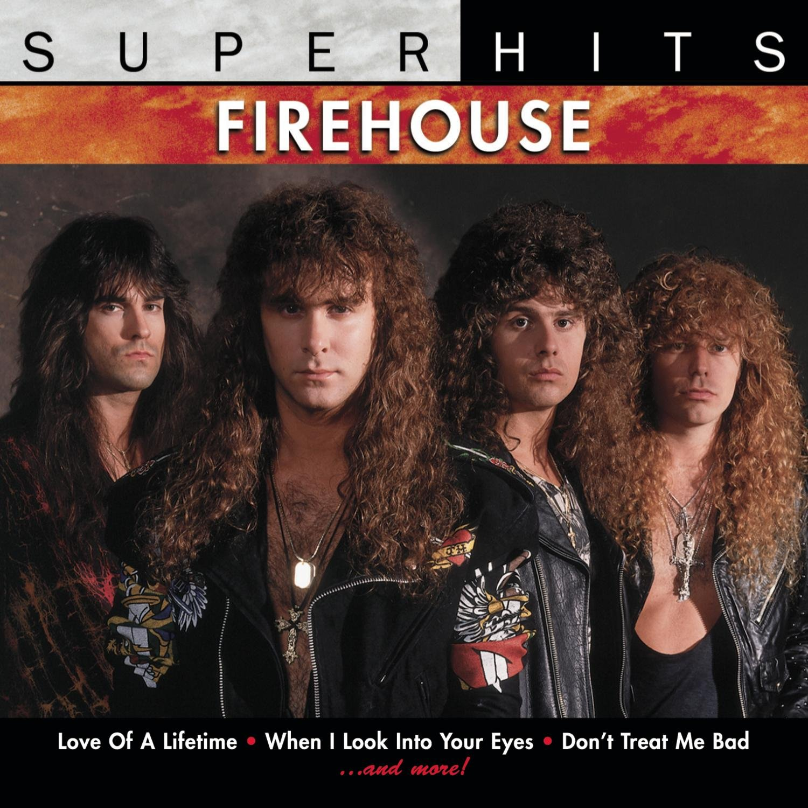

Biografía
FireHouse es una banda estadounidense de hard rock formada en Charlotte (Carolina del Norte) en 1989 y liderada por el vocalista C. J. Snare y el guitarrista Bill Leverty.
La banda adquirió la fama mundial en 1990 gracias a su álbum homónimo Firehouse del que salieron tres sencillos, uno de ellos la power ballad de gran éxito "Love of a Life Time". Este álbum les valió el premio de artista revelación en la categoría de HardRock/Heavy Metal de los American Music Awards de 1992, quedando por delante de Alice in Chains y Nirvana. Poco después publicaron el álbum de su consagración, Hold Your Fire, del que salieron otros tres sencillos. En 1995 publicaron su tercer álbum de estudio y con ello su último gran éxito, "I Live My Life for You". Firehouse ha gozado de popularidad en algunos países de Asia como Japón, Tailandia, Singapur y Corea del Sur.